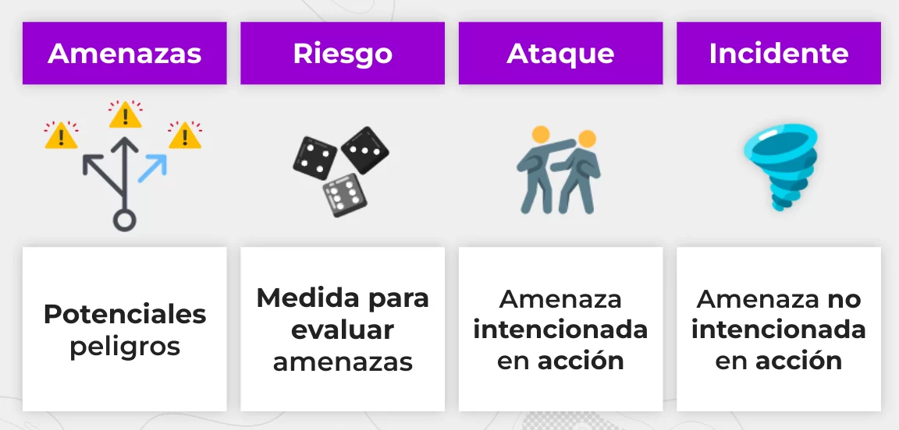

üõ°Ô∏è Introducci√≥n a la Gesti√≥n de Incidentes (IR)
1. Contexto general: Vivimos en una superficie de ataque global
Vivimos en una sociedad digital donde cada dispositivo conectado es una puerta potencial para un atacante. Las organizaciones no solo tienen que defender su perímetro, sino también prepararse para cuando esa defensa falle. Y va a fallar.
La pregunta no es “¿seremos atacados?”, sino “¿cómo responderemos cuando ocurra?”.
üí¨ Frase para la reflexi√≥n:
“Los ataques cibernéticos no son eventos aislados. Son inevitables. Lo que distingue a una organización resiliente es su capacidad de respuesta.”
- Adaptado de Bruce Schneier
⚠️ 2. ¿Qué es un incidente de seguridad?

Un incidente no es simplemente una amenaza o una vulnerabilidad. Es la materialización del riesgo:
“Un evento adverso real o inminente que pone en peligro la seguridad de los sistemas de información.”

Tipos de incidentes
Los incidentes de seguridad se clasifican según su naturaleza, impacto y método de ejecución. Estos son los principales tipos:
-
Incidentes por Malware
- Ejemplos: Ransomware, spyware, troyanos, gusanos
- Impacto: Pérdida de datos, cifrado de sistemas
- Caso reciente: Ataque de BlackCat/ALPHV a Change Healthcare (2024)
-
Ataques de Phishing
- Variantes: Spear phishing, smishing, BEC
- Objetivo: Robo de credenciales
- Táctica común: Correos falsos de instituciones
-
Brechas de Datos
- Causas: Vulnerabilidades o errores humanos
- Consecuencia: Exposición de información sensible
- Ejemplo 2024: Filtración de 73M registros de AT&T
-
- Tipos:
- Volumétricos (UDP flood)
- Aplicación (HTTP flood)
- Efecto: Inaccesibilidad de servicios
- Tipos:
-
Explotación de Vulnerabilidades
- High-risk: Zero-days
- Ejemplo crítico: Log4Shell (CVE-2021-44228)
-
Amenazas Internas
- Tipos:
- Intencionadas (empleados maliciosos)
- Negligentes (errores humanos)
- Tipos:
-
Ataques a Cadena de Suministro
- Modus operandi: Comprometer software legítimo
- Ejemplo: Ataque a Snowflake (2024)
-
Secuestro de Cuentas
- Métodos:
- Credential stuffing
- SIM swapping
- Métodos:
-
Ataques IoT/OT
- Riesgo: Infraestructuras críticas
- Ejemplo: Botnets como Mirai
-
Fraudes Cibernéticos
- Comunes:
- BEC (Business Email Compromise)
- Cryptojacking
- Comunes:
Clasificación por Gravedad
| Nivel | Ejemplo |
|---|---|
| Crítico | Ransomware en hospital |
| Alto | Filtración datos masiva |
| Medio | Phishing a empleados |
| Bajo | Escaneo de puertos bloqueado |
Ejemplos reales sólo en España en 2025:
- Enero 2025: Ataque de phishing a universitarios en Baleares
- Enero 2025: Brecha de datos en la Guardia Civil y las Fuerzas Armadas
- Enero 2025: Telefónica sufre un ciberataque en su sistema de ticketing
- Febrero 2025: Filtración de datos personales en DKV
- Marzo 2025: Quedan expuestos datos de clientes de El Corte Inglés
- Marzo 2025: Ataque prorruso a webs de diputaciones y ayuntamientos en España
- Abril 2025: robo de los datos de las federaciones de autónomos ATA
- Abril 2025: La compañía Aigües de Mataró sufre un ciberataque
- Abril 2025: Ransomware dirigido al Ayuntamiento de Badajoz
Más detallado aquí
üß© 3. ¿Por qu√© necesitamos una respuesta estructurada?
üí¨ Frase para la reflexi√≥n:
“Security is not a product, but a process.” — Bruce Schneier
Afirmar que la seguridad es un proceso es una forma muy concisa de transmitir la idea de que la seguridad no puede lograrse simplemente comprando y desplegando productos o herramientas de seguridad. Por el contrario, la verdadera seguridad requiere esfuerzos continuos y exhaustivos que comprenden una amplia gama de actividades y prácticas. La seguridad es un proceso dinámico y polifacético que requiere un esfuerzo coordinado y continuo. Se trata de crear un sistema resistente que debe adaptarse a los nuevos retos y amenazas a lo largo del tiempo.
Una buena defensa no siempre puede evitar un ataque. Pero una mala respuesta puede empeorarlo. Un ejemplo frecuente es reiniciar un equipo infectado sin preservar evidencias, lo cual impide análisis forense posterior.
Por eso, la respuesta a incidentes (IR) es un proceso formal y metódico que busca:
- Minimizar impacto
- Restaurar operaciones
- Preservar evidencias
- Aprender del incidente
üèõÔ∏è 4. Fundamentos normativos y frameworks
üìö Normativas y estándares:
- NIST SP 800-61 rev.2: Guía de manejo de incidentes (marco de referencia más usado)
- ISO/IEC 27035: Estándar internacional para gestión de incidentes
- ENS (España): Exige capacidades de IR a sistemas de información públicos
- NIS2 (Europa): La NIS2 (Network and Information Security Directive 2) es una normativa de la Unión Europea que refuerza y reemplaza a la directiva original NIS (2016), ampliando sus exigencias en materia de ciberseguridad para sectores críticos y operadores esenciales.
üîê Ciberseguridad en capas:
La respuesta a incidentes se sitúa en la última línea de defensa, justo después de que todas las otras capas han fallado.
ü߆ 5. Ciclo de Vida de la Respuesta a Incidentes
Inspirado en NIST, el proceso se divide en fases interdependientes

üìå Nota: Algunas organizaciones a√±aden una fase 0 (‚ÄúPreparaci√≥n estrat√©gica‚Äù) y una 6 (‚ÄúAutomatizaci√≥n y mejora continua‚Äù).
üß∞ 1. Preparaci√≥n
La fase de preparación es la primera y más crítica etapa del ciclo de vida de la respuesta a incidentes. Su objetivo es garantizar que la organización esté lista antes de que ocurra un incidente, minimizando su impacto y acelerando la recuperación.
Según NIST, una preparación sólida marca la diferencia entre el caos y la contención eficaz.
üéØ Objetivos de esta fase
- Establecer un plan formal y claro de actuación ante incidentes.
- Definir roles, responsabilidades y flujos de comunicación.
- Entrenar al personal y fortalecer la infraestructura de seguridad.
- Asegurar que existan herramientas, documentación y procesos actualizados.
üóÇÔ∏è Componentes clave de la preparaci√≥n
✅ 1.1 Plan de Respuesta a Incidentes (IRP)
- Documento estratégico y operativo que define qué hacer, quién lo hace y cómo ante distintos tipos de incidentes.
- Debe incluir procedimientos, taxonomía, criterios de severidad, matrices de escalado y canales de comunicación.
- Debe actualizarse al menos una vez al año o tras incidentes críticos.
üë• 1.2 Creaci√≥n del CSIRT / IRT
- Un Computer Security Incident Response Team o equipo de respuesta puede ser interno, mixto o subcontratado.
- Composición multidisciplinar: ciberseguridad, legal, TI, RRHH, comunicación.
- Debe tener autoridad, herramientas y líneas de comunicación directa con la dirección.
üìú 1.3 Pol√≠ticas, normas y procedimientos
- Política de gestión de incidentes (quién reporta, tiempos de notificación, etc.).
- Políticas relacionadas: uso aceptable, control de accesos, clasificación de la información.
- Procedimientos operativos normalizados (SOP): recuperación de sistemas, aislamiento de red, backup seguro.
üñ•Ô∏è 1.4 Inventario y clasificaci√≥n de activos
- Listado actualizado de sistemas críticos, redes, datos sensibles y proveedores clave.
- Identificación de sistemas que requieren protección reforzada (según ENS, RGPD, etc.).
üìû 1.5 Canales de comunicaci√≥n establecidos
- Definición de contactos internos (SOC, IT, CISO, legales) y externos (CERT/CC, proveedores, policía).
- Protocolos de comunicación en caso de contingencia (email alternativo, móviles, canales encriptados).
üß™ 1.6 Formaci√≥n y simulacros
- Formación continua del personal técnico y no técnico.
- Ejercicios tipo Tabletop: simulación en sala para discutir respuestas.
- Red Team / Blue Team: ejercicios ofensivos y defensivos realistas para poner a prueba planes.
- Lecciones aprendidas de cada simulacro → mejoras en IRP y formación.
üõ†Ô∏è Buenas prácticas
- Disponer de herramientas EDR, SIEM o ticketing ya preconfiguradas.
-
Establecer métricas para evaluar la preparación (MTTD, MTTR).
⏱️ Tipos de Tiempos que se Miden en Respuesta a Incidentes (IR)
### ⏱️ Tipos de Tiempos que se Miden en Respuesta a Incidentes (IR)
| Tiempo | Definición | Importancia |
|---|---|---|
| MTTD (Mean Time to Detect) | Tiempo medio desde que ocurre un incidente hasta que se detecta. | Evalúa la eficacia de las herramientas de detección y monitorización. |
| MTTI (Mean Time to Identify) | Tiempo medio desde la detección hasta confirmar que es un incidente. | Refleja la capacidad de análisis y clasificación del equipo. |
| MTTR (Mean Time to Respond) | Tiempo medio desde la identificación hasta iniciar la respuesta. | Mide la agilidad de reacción del CSIRT. |
| MTTC (Mean Time to Contain) | Tiempo medio desde la detección hasta contener completamente el incidente. | Indica rapidez para controlar la amenaza. |
| MTTE (Mean Time to Eradicate) | Tiempo medio para eliminar la causa raíz (malware, acceso, vulnerabilidad). | Evalúa eficiencia en limpieza y erradicación. |
| MTTR (Mean Time to Recover) | Tiempo medio para restaurar el sistema a su estado operativo normal. | Refleja la resiliencia y capacidad de recuperación. |
| TTR (Time to Report) | Tiempo desde la detección hasta la notificación oficial del incidente. | Clave para cumplimiento legal (RGPD, ENS, NIS2, etc.). |
| Time to Learn | Tiempo desde la resolución hasta la incorporación de mejoras. | Mide madurez organizativa y aprendizaje post-incidente. |
- Alinear la preparación con normativas como el ENS, la NIS2, y ISO 27035.
- Hacer pruebas cruzadas con otras funciones: continuidad del negocio, protección de datos, etc.
üìå Resultado esperado
Una organización preparada:
- Tiene procedimientos documentados y conocidos por todos los actores.
- Puede responder de forma ordenada, rápida y efectiva.
- Reduce riesgos legales, reputacionales y económicos ante cualquier incidente.
üîé 2. Detecci√≥n y análisis
La fase de detección y análisis es el punto en el que una organización reconoce una posible amenaza y comienza a investigarla. Esta etapa es crítica para reducir el tiempo de respuesta y evitar que el incidente escale.
Una buena detección solo es posible si la fase de preparación se ha ejecutado correctamente.
üß≠ Objetivos de la fase
- Identificar actividades anómalas o maliciosas en tiempo y forma.
- Correlacionar eventos para determinar si constituyen un incidente.
- Clasificar el incidente, evaluando su gravedad e impacto.
- Activar el plan de respuesta correspondiente.
üß∞ Herramientas clave para la detecci√≥n
| Herramienta / Tecnología | Función principal |
|---|---|
| SIEM (Security Information and Event Management) | Recolecta, centraliza y correlaciona logs de múltiples fuentes. |
| IDS/IPS (Intrusion Detection/Prevention Systems) | Detecta y/o bloquea tráfico malicioso en la red. |
| EDR/XDR (Endpoint/Extended Detection and Response) | Supervisa y responde a amenazas en endpoints (PCs, servidores, etc.). |
| Logs y auditoría | Registro detallado de eventos en sistemas, aplicaciones y redes. |
| Herramientas de threat intelligence | Enriquecen alertas con datos sobre actores y campañas conocidas. |
üîÑ Proceso t√≠pico de análisis
-
Recolección de alertas o indicadores
- Las alertas pueden provenir de sensores automáticos (SIEM, EDR), usuarios finales, proveedores, etc.
-
Correlación y contextualización
- El analista revisa patrones y relaciones entre eventos: ¿se trata de una secuencia aleatoria o una amenaza organizada?
-
Verificación
- No toda alerta es un incidente. Muchas son falsos positivos. Hay que confirmar:
- ¿Es un incidente real?
- ¿Qué sistemas están afectados?
- ¿Cuál es el vector de ataque?
- No toda alerta es un incidente. Muchas son falsos positivos. Hay que confirmar:
-
Clasificación mediante taxonomía
- Se asigna una categoría y subcategoría al incidente según su naturaleza (malware, fuga de datos, DDoS…).
- También se determina su nivel de criticidad (bajo, medio, alto, crítico).
- Esto permite seleccionar el playbook adecuado para la respuesta.
-
Registro del incidente
- Se documenta en una base de datos o herramienta de ticketing, incluyendo:
- Hora de detección
- Fuente
- Clasificación
- Responsable asignado
- Acciones iniciales tomadas
- Se documenta en una base de datos o herramienta de ticketing, incluyendo:
üìä Criterios de severidad (ejemplo)
| Nivel | Descripción | Ejemplo |
|---|---|---|
| Bajo | No afecta sistemas críticos, impacto menor | Usuario abre phishing pero no clickea |
| Medio | Afecta a usuarios individuales o servicios secundarios | Malware aislado en un PC |
| Alto | Afecta sistemas clave o datos sensibles | Exfiltración de datos con impacto legal |
| Crítico | Amenaza para toda la organización | Ransomware en múltiples servidores clave |
üß± Rol de la taxonom√≠a de incidentes
Durante esta fase se utiliza una taxonomía estructurada para clasificar el incidente correctamente.
Esto facilita:
- Escalar correctamente el incidente.
- Activar el procedimiento (playbook) adecuado.
- Obtener estadísticas y reportes consistentes.
- Cumplir con requisitos regulatorios (ENS, NIS2, ISO 27035…).
üìå Más adelante profundizaremos en la taxonom√≠a de incidentes.
⚠️ Ejemplo real
üîî Un EDR detecta la ejecuci√≥n de un script PowerShell cifrado en un servidor interno.
üìå Proceso:
- El evento llega al SIEM y se correlaciona con una conexión sospechosa saliente.
- Se identifica como posible malware con comportamiento de exfiltración.
- El analista lo clasifica como:
- Categoría: Malware
- Subcategoría: Downloader + Exfiltración
- Severidad: Alta
- Se activa el playbook de contención de malware y se notifica a la dirección.
ü߆ Conclusi√≥n
Una detección eficaz requiere:
- Visibilidad completa del entorno
- Herramientas adecuadas de monitoreo
- Analistas capacitados y documentación clara
- Coordinación con la fase de preparación
Una mala detección puede convertir un incidente leve en una crisis mayor.
üõë 3. Fase de Contenci√≥n
Una vez confirmado el incidente, la prioridad es limitar su alcance y daño lo antes posible. Esta fase consiste en detener la propagación, evitar la pérdida de información y proteger los activos críticos.
üéØ Objetivos
- Minimizar el impacto del incidente.
- Proteger sistemas no afectados.
- Ganar tiempo para investigar y planificar la recuperación.
⚙️ Tipos de contención
üìç Contenci√≥n a corto plazo
- Acción inmediata para aislar o desconectar sistemas afectados.
- Ejemplos:
- Quitar de la red el equipo comprometido.
- Bloquear direcciones IP sospechosas en el firewall.
- Cerrar sesiones activas del atacante.
üß© Contenci√≥n a largo plazo
- Acciones que preparan el sistema para una recuperación segura.
- Ejemplos:
- Aplicación de parches de seguridad.
- Cambio de credenciales comprometidas.
- Reconfiguración de servicios expuestos.
⚠️ ¡Ojo! Actuar demasiado rápido sin análisis puede destruir evidencias forenses.
ü߆ Requiere:
- Decisiones rápidas pero estratégicas y justificadas.
- Coordinación entre CSIRT, legal y TI.
- Consideración del impacto operacional y reputacional.
üßπ 4. Fase de Erradicaci√≥n y Recuperaci√≥n
Con el incidente contenido, es hora de eliminar cualquier rastro de la amenaza y restaurar los sistemas afectados de forma segura.
üîç Erradicaci√≥n
- Eliminar el malware, herramientas del atacante, cuentas no autorizadas o backdoors.
- Buscar persistencia: el atacante podría haber instalado mecanismos para volver a entrar.
- Comprobar los registros y hashes para validar que no quedan trazas.
üß™ Verificaci√≥n
- Escaneo de sistemas con antivirus/EDR actualizados.
- Análisis de logs y tráfico de red post-incidente.
- Validación de integridad (checksums, firmas digitales…).
♻️ Recuperación
- Restaurar servicios desde backups verificados.
- Aplicar actualizaciones y configuraciones reforzadas.
- Reincorporar los sistemas a la red solo cuando estén validados.
- Realizar pruebas funcionales y de seguridad.
✅ Objetivo final
Volver a la normalidad con garantías de que la amenaza ha sido eliminada y no puede repetirse por el mismo vector.
üìã 5. Fase de Lecciones Aprendidas
Una vez resuelto el incidente, es fundamental reflexionar sobre lo ocurrido para mejorar las capacidades futuras.
Esta fase a menudo se olvida… ¡pero es la que convierte el error en mejora continua!
ü߆ Actividades clave
üßæ 5.1 Análisis post-mortem (retrospectiva)
- ¿Qué sucedió exactamente?
- ¿Cómo se detectó y respondió?
- ¿Qué funcionó y qué no?
- ¿Qué se podría haber hecho mejor?
üìà 5.2 Mejora de controles y procesos
- Actualizar políticas y procedimientos.
- Ajustar configuraciones de seguridad (firewall, roles, alertas…).
- Invertir en herramientas o formación si se identificaron carencias.
ü™™ 5.3 Documentaci√≥n formal
- Redacción de informes internos y ejecutivos.
- Registro en sistemas de ticketing o bases de datos de incidentes.
- Informe a autoridades si es obligatorio (ej. AEPD, CCN-CERT).
üìö 5.4 Actualizaci√≥n del plan IRP y formaci√≥n
- Modificación del Plan de Respuesta a Incidentes.
- Inclusión del incidente como caso de estudio para futuras formaciones.
üìå Resultado esperado
Una organización resiliente:
- Aprende de cada incidente.
- Mejora continuamente su postura de ciberseguridad.
- Reduce el riesgo de que un incidente similar vuelva a ocurrir.
ü뮂Äçüíª 6. Roles del Equipo de Respuesta a Incidentes (CSIRT)
Un equipo efectivo de respuesta a incidentes está compuesto por perfiles técnicos y estratégicos que colaboran de forma coordinada. Cada rol tiene funciones bien definidas para asegurar una respuesta eficiente y controlada.
| Rol | Funciones Principales |
|---|---|
| SOC Analyst (Nivel 1/2/3) | - Monitorización continua de alertas. - Triaje inicial de incidentes. - Contención básica. |
| Incident Responder | - Investigación en profundidad. - Análisis forense básico. - Coordinación técnica. |
| Forensic Analyst | - Análisis de memoria, discos, logs. - Preservación de evidencias. - Apoyo en procesos legales. |
| Threat Hunter | - Detección proactiva de amenazas. - Análisis de TTPs (MITRE ATT&CK). - Mejora de alertado. |
| CSIRT Manager | - Liderazgo del equipo. - Comunicación con stakeholders. - Priorización de incidentes. |
| Malware Analyst | - Reversing de malware. - Análisis estático y dinámico. - Creación de firmas (YARA, Snort). |
| Threat Intelligence Analyst | - Recolección de inteligencia de amenazas. - Enlace con fuentes externas. - Informes y enriquecimiento de alertas. |
| Communications Officer | - Gestión de la comunicación interna y externa. - Comunicación de crisis. - Informes a reguladores o clientes. |
| Legal/Compliance Advisor | - Cumplimiento normativo (ENS, NIS2, RGPD). - Gestión legal de notificaciones y brechas. |
| IT/Network Specialist | - Aplicación de contramedidas técnicas. - Hardening y reconfiguración de red. - Coordinación con sistemas. |
üîß 7. Herramientas Clave para Respuesta a Incidentes
| Categoría | Herramientas Comunes |
|---|---|
| SIEM | Splunk, Wazuh, IBM QRadar |
| EDR/XDR | CrowdStrike, SentinelOne, Microsoft Defender |
| Análisis Forense | Autopsy, FTK Imager, Volatility |
| Sandboxing | Cuckoo Sandbox, Any.Run |
| Threat Intel | MISP, VirusTotal, Intel 471 |
| SOAR | TheHive + Cortex, Shuffle, Splunk SOAR, IBM Resilient |
ü߆ 8. Cultura de Seguridad y Detecci√≥n Temprana
Una respuesta efectiva comienza mucho antes de la detección del incidente. La cultura organizativa es clave para prevenir y responder eficazmente.
üìå Principios fundamentales:
- Formación continua de usuarios y técnicos.
- El usuario final puede ser el primer sensor de amenazas.
- Fomentar una cultura de reporte sin miedo ni represalias.
- Integrar la ciberseguridad en todos los niveles de la organización.
üìò 9. ¿Qu√© es un Playbook de Respuesta a Incidentes?
Un playbook es un procedimiento detallado, estructurado y reutilizable que define qué hacer paso a paso ante un tipo específico de incidente. Sirve como guía para actuar con rapidez, coherencia y eficacia.
üß≠ ¿Por qu√© usar playbooks?
- Estandarizan la respuesta.
- Aumentan la agilidad del equipo.
- Facilitan el entrenamiento y la transferencia de conocimiento.
- Sirven de base para la automatización con SOAR.
üß© 10. Componentes T√≠picos de un Playbook
| Componente | Descripción |
|---|---|
| Nombre del incidente | Tipo de incidente tratado (phishing, ransomware, fuga de datos…). |
| Objetivo | Qué se espera lograr con la respuesta. |
| Indicadores (IoCs) | Señales observables del incidente (hashes, IPs, dominios...). |
| Fases de respuesta | Qué hacer en cada etapa (detección, contención, erradicación…). |
| Roles asignados | Quién debe realizar cada tarea. |
| Checklists operativas | Acciones concretas: comandos, análisis, aislamiento, herramientas a utilizar. |
| Notificaciones | A quién avisar: CISO, DPO, RRHH, usuarios afectados, autoridades, etc. |
| Referencias legales | Obligaciones de notificación según ENS, RGPD, NIS2, etc. |
| Lecciones aprendidas | Cambios a realizar tras el incidente o ensayo. |
üõ†Ô∏è 12. Ejemplo Breve: Playbook de Phishing
Nombre: Phishing por correo
Objetivo: Evitar propagación, identificar afectados, contener amenaza.
Fase 1: Confirmación → Revisar encabezado, verificar URLs, analizar adjunto.
Fase 2: Contención → Bloquear URL/IP en proxy/firewall, revocar accesos comprometidos.
Fase 3: Erradicación → Eliminar email de bandejas, forzar cambio de contraseñas.
Fase 4: Notificación → CISO, RRHH, usuarios afectados.
Fase 5: Mejora → Revisar filtros de correo, reforzar formación.
13. üîÅ 13. Relaci√≥n con SOAR y Automatizaci√≥n
Una vez definidos, los playbooks pueden automatizarse mediante herramientas SOAR (Security Orchestration, Automation and Response).
Estas plataformas integran sistemas, ejecutan tareas automáticamente y permiten a los analistas centrarse en la toma de decisiones críticas.
üõ†Ô∏è Plataformas SOAR populares:
-
TheHive + Cortex: Open-source, modular, muy usado en Europa.
-
Splunk SOAR: Integrado con Splunk SIEM.
-
IBM Resilient: Potente y enfocado en entornos regulados.
üìå Acciones t√≠picas automatizables:
-
Cuarentena de un equipo desde EDR.
-
Envío automático de alertas por correo o Slack.
-
Búsqueda de IoCs en múltiples fuentes.
-
Registro del incidente en el sistema de ticketing.
-
La automatización bien aplicada reduce el tiempo de respuesta y el desgaste del equipo.
üíº 14. Taxonom√≠a de incidentes
La taxonomía de incidentes es un sistema de clasificación que permite categorizar los incidentes de seguridad en sistemas según su origen, impacto, técnicas utilizadas y vectores de ataque. Su objetivo es estandarizar el lenguaje en la respuesta a incidentes (IR) y facilitar el análisis forense, la contención y la remediación.
A continuación, se presenta una taxonomía técnica centrada en sistemas, basada en marcos como MITRE ATT&CK, CWE (Common Weakness Enumeration) y NIST SP 800-61.
1. ¿Por qué Usar una Taxonomía?
- Estandarización: Lenguaje común para describir incidentes
- Priorización: Determinar criticidad (ej: ransomware > escaneo de puertos)
- Mejora continua: Generación de métricas para análisis
2. Taxonomía Basada en Sistemas
A. Por Tipo de Ataque
| Categoría | Ejemplos Técnicos | Indicadores Clave (IOCs) |
|---|---|---|
| Malware | Ransomware, rootkits, backdoors | Hashes de archivos, conexiones C2 |
| Explotación de SW | Vulnerabilidades (Log4j, ProxyShell) | Logs de errores, ejecución de payloads |
| Credential Theft | Pass-the-Hash, Kerberoasting | Eventos 4625 (Windows) |
B. Por Impacto en Sistemas
| Nivel | Definición | Ejemplo |
|---|---|---|
| Crítico | Compromete toda la infraestructura | Ransomware en servidores |
| Alto | Afecta múltiples sistemas | Dominio AD comprometido |
C. Por Vector de Inicialización
| Vector | Descripción | Ejemplo en Sistemas |
|---|---|---|
| Remoto | Ataque desde red externa | Explotación de VPN |
| Local | Ejecución desde dentro | USB infectado |
3. Taxonomías de Referencia
A. MITRE ATT&CK
- Táctica: Persistence → Técnica: Scheduled Task
- Ejemplo:
schtasks /create
B. CWE (Common Weakness Enumeration)
- CWE-89: SQL Injection → Ataque a bases de datos
C. NIST SP 800-61
- Categorías: DoS, Unauthorized Access
4. Aplicación Práctica en IR
Paso 1: Clasificar el Incidente
- Tipo: Malware (Ransomware)
- Impacto: Crítico
- Vector: Remoto (RDP expuesto)
Paso 2: Respuesta Técnica
-
Contención: Bloquear IPs maliciosas
-
Erradicación: Eliminar tareas programadas (T1053.005 ATT&CK)
Paso 3: Reporte Estructurado
Reporte de Incidente
- ID: INC-2023-001
- Taxonomía: Malware → Ransomware (Ryuk)
- Técnicas MITRE: T1486 (Data Encrypted for Impact)
5. Herramientas para Automatización
-
MISP: Compartir IOCs
-
Splunk ES: Correlación con ATT&CK
-
TheHive: Gestión de casos
Así pues, a modo de recapitulación, la taxonomía permite:
-
✔ Priorizar acciones técnicas
-
✔ Comunicación efectiva entre equipos
-
✔ Integración con marcos como ATT&CK
üìå Conclusi√≥n
Responder a incidentes no es solo cuestión de tecnología, sino de personas, procesos y estrategia. Enseñar a responder correctamente es tan importante como enseñar a prevenir.
“La preparación es la mejor defensa, y la respuesta, la verdadera prueba de madurez en ciberseguridad.”